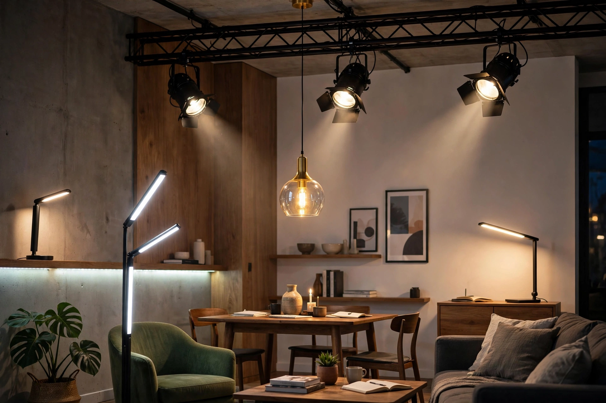

Lighting or illumination is the deliberate use of light to achieve practical or aesthetic effects. Lighting includes the use of both artificial light sources like lamps and light fixtures, and natural illumination by capturing daylight. Daylighting (using windows, skylights, or light shelves) is sometimes used as the main source of light during daytime in buildings to save energy and improve well-being.
Human illumination began with fire, candles, and oil lamps. Gas lighting spread in the nineteenth century, followed by Thomas Edison's practical incandescent lamp in 1879, which transformed domestic and urban life. Fluorescent lamps arrived in the 1930s–40s, and in the twenty-first century solid-state LED lighting displaced most earlier technologies thanks to its efficiency and longevity.
Lighting is commonly divided into ambient (general) lighting, task lighting, and accent lighting. Illuminance is measured in lux (lumens per square metre), and the perceived color of a light source is described by its correlated color temperature, measured in kelvins, and its color rendering index.
Lighting designers plan illumination for buildings and public spaces, balancing visibility, comfort, energy use, and mood. Poor lighting is associated with glare and eye strain, while well-designed daylighting is linked to improved health and productivity.
In visual media, lighting shapes narrative and emotion. Cinematographers use techniques such as three-point lighting — a key light, fill light, and back light — along with high-key and low-key schemes to model subjects and create depth. See cinematography.
Excessive artificial light at night causes light pollution, which wastes energy, disrupts ecosystems and human circadian rhythms, and obscures the night sky; the International Dark-Sky Association advocates responsible outdoor lighting.